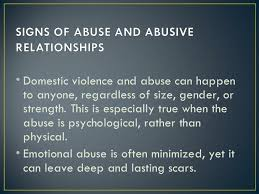
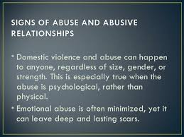

First warning signs

The 'Crazy-Making'

Physical, Emotional, Sexual, etc
Apologies and things are temporarily 'normal' again
The pattern continues


 

Family Crisis Center Portland, ME 207-874-1973
Safe Voices Lewiston, ME 207-795-6744
Violence No More Biddeford, ME 207-283-8574
New Hope Midcoast Bath, ME 207-443-8898
Family Violence Project Augusta, ME 877-890-7788
Next Step Domestic Violence Project Ellsworth, ME 207-667-0176
Abused Women's Advocacy Project Farmington, ME 207-778-6107
New Hope Women's Shelter Solon, ME 207-643-6015
Battered Women's Project Presque Isle, ME 207-764-2977
Hope & Justice Project Houlton, ME 207-532-4004
Sexual Assault Services of Southern Maine 207-828-1035
New Hope Midcoast Rockland, ME 207-594-2128
Voices Against Violence
Plymouth, NH 603-536-5999
Bridges:Domestic & Sexual Violence Support Nashua, NH 603-889-0858
New Beginnings Women's Crisis Laconia, NH 603-528-6511
HAVEN Portsmouth, NH 603-994-7233
McKenna House Concord, NH 603-228-3505
Ending the Violence Dover, NH 603-988-5356
YWCA Derry, NH 603-432-2687
Response to Domestic & Sexual Abuse Berlin, NH 603-752-5679
Monadnock Center for Violence Prevention, Inc. Keene, NH 603-352-3782
A Safe Place Nashua, NH 603-718-8937
WISE Lebanon, NH 866-348-9473
Families in Transition Dover, NH 603-750-4199 or Manchester, NH 603-641-9441
Vermont Network Against Domestic and Sexual Violence
CLICK HERE TO GO TO THEIR WEBPAGE
Steps to End Domestic Violence; HOPE Works Hotline 800-228-7395
Aware Inc. Hardwick, VT 802-472-6463
Project Against Violent Encounters Bennington, VT 802-442-2370
Rape Crisis Center Rutland, VT 802-775-3232
Sexual Assault Crisis Team Barre, VT 802-479-5577
Lyndon Women's Home Lyndonville, VT 802-626-8704
Advocacy Program at Umbrella Johnsbury, VT 802-748-8645
Umbrella Newport, VT 802-334-0148
Vermont Commission For Women Montpelier, VT 802-828-2851
John W. Graham Shelter Vergennes, VT 802-877-2677
YWCA Winooski, VT 802-862-4258
Spectrum Domestic Abuse Education St. Albans, VT 802-527-7400
Voices Against Violence Framingham, MA 508-820-0834
Transition House, Inc. Cambridge, MA 617-868-1650
Safe Havens Interfaith Partnership Against Domestic Violence Boston, MA 617-951-3980
Casa Myrna Boston, MA 877-785-2020

Safe Passage Northampton, MA 413-586-1125
Respond Inc. MA 617-623-5900
Independence House Hyannis, MA 508-771-6507
Harbor Community Overcoming Violence Chelsea, MA 717-884-9799
Alianza DV Services Holyoke, MA 413-538-9717
New Hope, Inc. Milford, MA 508-226-4015
SAFEPLAN Brockton, MA 508-427-5732
The Women's Center New Bedford, MA 508-996-3343 or Cambridge, MA 617-354-6394
Jeanne Geiger Crisis Center-Survivor and Prevention Services Amesbury, MA 978-388-1888